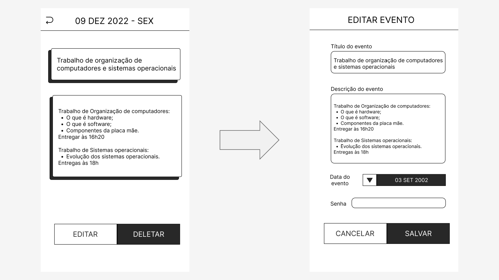

Semelhante ao fluxo de telas, a documentação de UX nos ajuda a navegar por todas as telas da aplicação, de forma que seja especificado também passo a passo que ações devem ser tomadas em uma tela para que se chegue em outra. esta documentação também serve como espelho dos casos de uso, sendo possível apontar para cada um deles e onde eles ocorrem de fato na aplicação final.
Fluxo #001: Início
Esta é a primeira tela que o usuário vai ver ao entrar na aplicação pela primeira vez. Caso ele já tenha entrado anteriormente e tenha se logado, a primeira tela será na verdade a home, mais a frente citada.

Fluxo #002: Cadastro
Partindo da tela de início, ao clicar no botão "Criar Conta", o usuário será direcionado à tela de cadastro.
Fluxo #003: Login
Partindo da tela de início, ao clicar no botão "Entrar", o usuário será direcionado à tela de login.
Fluxo #004: Home - Lista de Eventos
Uma ves que o usuário tenha adicionado seus dados na tela de Login, ao apertar no botão "Entrar", ele será direcionado para o Home. Caso ele esteja na tela de cadastro, após inserir todos os dados solicitados (a imagem é opcional) e apertar no botão "Criar", ele irá também para o Home. O Home possui uma lista com todos os eventos cadastrados pelo usuário na ordem do que está mais próximo para chegar até o mais distante.

Fluxo #005: Menu lateral
A partir do Home, ao ser selecionado o botão de menu no canto superior esquerdo, será aberto o menu lateral. Para o desativar basta tocar na área do home que ficou levemente desfocada e assim o usuário estará novamente no home.
Fluxo #006: Sair
A partir do menu lateral, se for tocado o botão "Sair" no canto inferior, um pop up de confirmação de saída será aberto.

Fluxo #007: Perfil
A partir do menu lateral, ao se apertar o botão "perfil" será aberta a tela de perfil com todos os dados do usuário.

Fluxo #008: Editar perfil
A partir da tela de perfil, ao se selecionar o botão de "Editar", será aberta a tela de editar perfil, onde é possível alterar os dados do usuário.
Fluxo #009: Deletar perfil
A partir da tela de perfil, ao se pressionar o botão de "Deletar" será ativado um pop up de confirmação para a ação de deletar a cena.

Fluxo #010: Calendário
A partir do menu lateral, ao se selecionar o botão "calendário", será aberta a tela de calendário. Onde é possível ver todos os dias de um Mês, todos os eventos cadastrados nos dias do mês, e também épossível alterar o mês a se exibir.

Fluxo #011: Lista de eventos do dia
A partir da tela de calendário, ao se clicar em algum dia do mês, será aberta a tela de eventos do dia selecionado. Ela é semelhante à tela de Home, com a diferença de que ela apenas mostra os eventos de um dia.

Fluxo #012: Evento
A partir da tela de home ou a partir da tela de eventos de um dia, ao se clicar em um card de evento será aberta a tela de evento com os dados do evento selecionado.
Fluxo #013: Criar evento
A partir da tela de Home, ou calendário, ou eventos de um dia, é possível ir para a tela de criar evento ao clicar no botão com o símbolo "+" presente em todas estas telas.

Fluxo #014: Editar evento
A partir da tela de evento, ao selecionar o botão "Editar", será aberta a tela de editar evento, onde os dados do evento cadastrado podem ser atualizados se o usuário desejar.
Fluxo #015: Remover evento
A partir da tela de evento, ao selecionar o botão "Deletar", será aberto um pop up de confirmação para deletar o evento selecionado.

Fluxo #016: Recuperar senha
A partir da tela de login, caso o usuário não lembre sua senha, ele pode apertar no texto em negrito "Esqueceu a senha?" para abrir a tela de recuperar senha. Nela, o usuário deve digitar o seu email, pressionar o botão de "Continuar", e o sistema automaticamente mandará um e-mail para o usuário com a sua senha.
Fluxo #017: Notificação
Assim que o usuário abrir a aplicação em um dia e entrar na tela de home, caso um ou mais eventos estejam ocorrendo nesse dia, será ativado o pop up de notificação.